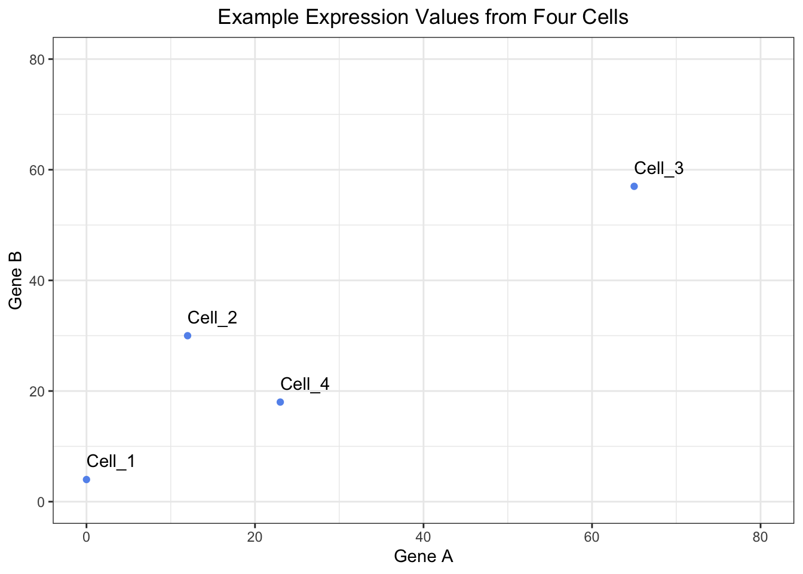
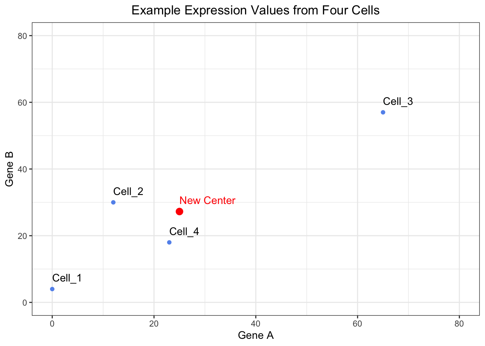
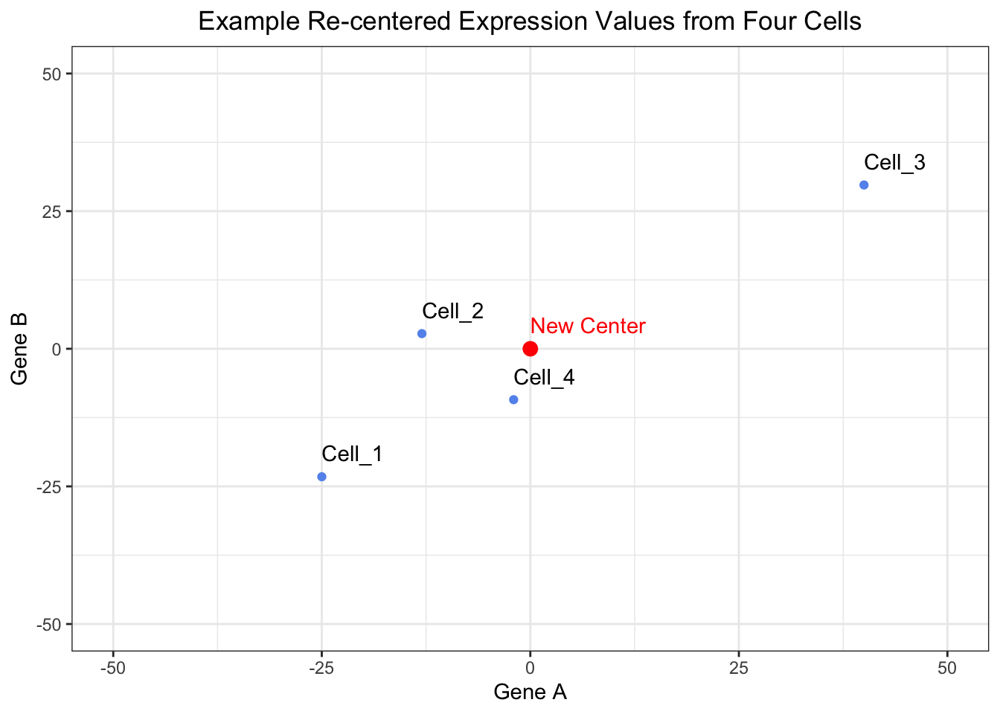
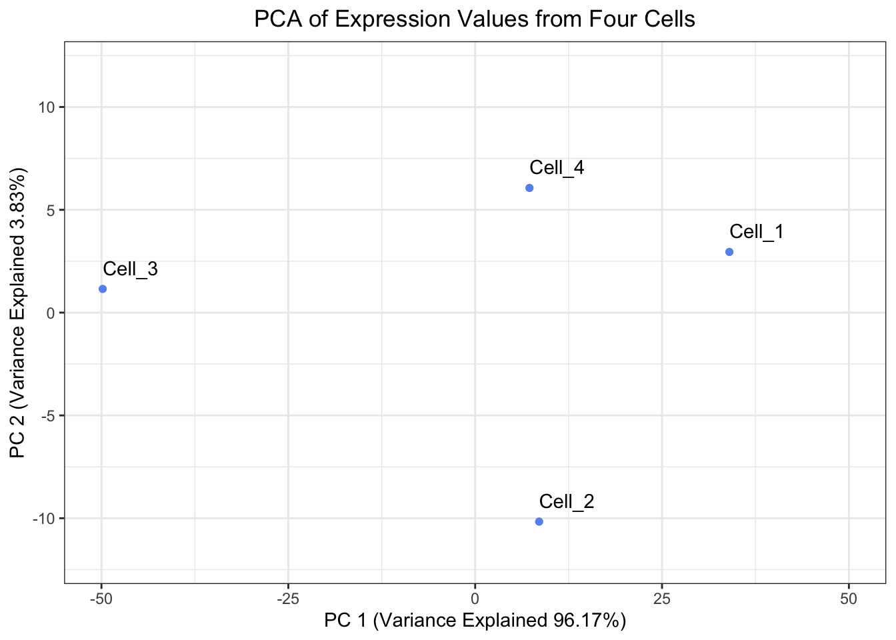
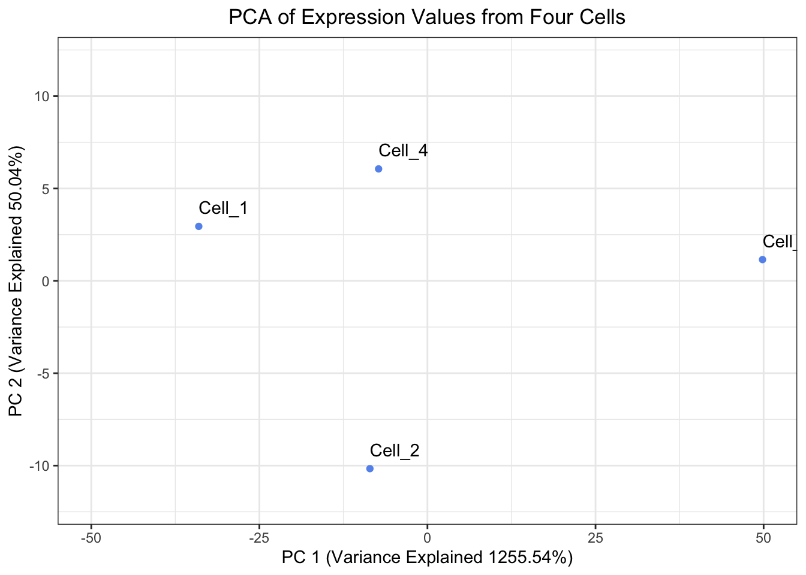

library(tidyverse)Theory of PCA
Approximate time: 45 minutes
Learning Objectives
- Derive the covariance matrix used for Principal Components Analysis
- Explain the roles of eigenvectors and eigenvalues within a Principal Components Analysis
- Compare and contrast our Principal Components Analysis to the output of
prcomp()
Background
Principal Components Analysis is a dimensionality-reduction method employed to stratify data by their variance. Thus, points that are more closely together on a PCA are more similar to each other, while points that are more dissimilar to each other will be further apart. As a result, you would likely expect similar cell from the same cell type to cluster near each other and apart from distinctly different cell types. In order to demonstrate how Principal Components Analysis works we are going to describe the process roughly works in high-dimensional data, then work through it a two-dimensional example data set.
Consider a single-cell experiment where you have the expression value for every gene in each cell. Let’s hypothetically say that our sample has data from 25,000 genes. We could plot this 25,000-dimensional space where each dimension represents a given gene’s expression and each point represents a cell in that 25,000-dimensional space. However, that is rather unintuitive and many of those dimensions are uninteresting, so we would like to reduce the dimensionality to the axes that separate the variance the most. This is what we will be doing with a Principal Components Analysis.
From a high-level perspective, what we will be doing is:
- Finding the vector in that 25,000-dimensional space that has the most variance in it.
- Looking for another vector that is orthogonal (a 90° angle but in multi-dimensional space) to the first vector that explains the most of the remaining variance. We this process until, in theory, you have have as many vectors as dimensions in your original dataset. However, in practice, people oftentimes stop after a few dozen.
- Using these vectors to transform your original data into Principal Components space.
Setting up to calculate Eigenvalues and Eigenvectors
We will be using some functions from tidyverse in the lesson, so we will need to load it:
Creating an example data set
We are going to discuss the steps for deriving a Principal Components analysis, but in order to do it, we are going to use an example dataset. Let’s start by creating an tibble that has gene expression values for two genes from four cells.
# Create a vector for Cell IDs
cells <- c("Cell_1", "Cell_2", "Cell_3", "Cell_4")
# Create a vector to hold expression values for Gene A across all of the cells
Gene_A <- c(0, 12, 65, 23)
# Create a vector to hold expression values for Gene B across all of the cells
Gene_B <- c(4, 30, 57, 18)
# Create a tibble to hold the cell names and expression values
expression_tibble <- tibble(cells, Gene_A, Gene_B)
# View the expression tibble
expression_tibble# A tibble: 4 × 3
cells Gene_A Gene_B
<chr> <dbl> <dbl>
1 Cell_1 0 4
2 Cell_2 12 30
3 Cell_3 65 57
4 Cell_4 23 18Let’s get an idea of what our data looks like by plotting it:
# Create a plot to view the raw expression data
ggplot(expression_tibble, aes(x = Gene_A, y = Gene_B, label = cells)) +
geom_point(color = "cornflowerblue") +
geom_text(hjust = 0, vjust = -1) +
xlim(0, 80) +
ylim(0, 80) +
theme_bw() +
xlab("Gene A") +
ylab("Gene B") +
ggtitle("Example Expression Values from Four Cells") +
theme(plot.title = element_text(hjust = 0.5))
Now if were were to consider our data set that has X genes and Y cells, then this plot would have X dimensions and Y points.
Re-centering the dataset
When performing PCA, the first step is to re-center the data so that the center of the data is the origin. In order to do this, we need to do two steps:
1. Find the center of the data
We can find the center of the data by taking the average gene expression across each gene (dimension).
# Determine the center of the data by:
# Finding the average expression of gene A
Gene_A_mean <- mean(expression_tibble$Gene_A)
# Finding the average expression of gene B
Gene_B_mean <- mean(expression_tibble$Gene_B)
# Create a vector to hold the center of the data
center_of_data <- c(Gene_A_mean, Gene_B_mean)
# Assign names to the components of the vector
names(center_of_data) <- c("Gene_A", "Gene_B")
# Print out the center_of_data vector
center_of_dataGene_A Gene_B
25.00 27.25 The new center of the data will be where ( 25, 27.25 ) is currently. We can visualize this center and inspect that this is does in fact appear to be roughly in the middle of the data.
# View where the center of the data is located
ggplot(expression_tibble, aes(x = Gene_A, y = Gene_B, label = cells)) +
geom_point(color = "cornflowerblue") +
annotate("point", x = Gene_A_mean, y = Gene_B_mean, color = "red", size = 3) +
geom_text(hjust = 0, vjust = -1) +
annotate("text", x = Gene_A_mean, y = Gene_B_mean, color = "red", label="New Center", hjust = 0, vjust = -1) +
xlim(0, 80) +
ylim(0, 80) +
theme_bw() +
xlab("Gene A") +
ylab("Gene B") +
ggtitle("Example Expression Values from Four Cells") +
theme(plot.title = element_text(hjust = 0.5))
2. Translate the points from their raw expression coordinates to coordinates centered around the center of the data
Next, we need to shift the points so that the center of the data corresponds to the origin. We can do this by subtracting the mean value from each gene from the raw values.
# Shift the data points so that they data is centered on the origin
recentered_expression_tibble <- expression_tibble %>%
mutate(
Gene_A = Gene_A - Gene_A_mean,
Gene_B = Gene_B - Gene_B_mean
)
# Print out the re-centered data
recentered_expression_tibble# A tibble: 4 × 3
cells Gene_A Gene_B
<chr> <dbl> <dbl>
1 Cell_1 -25 -23.2
2 Cell_2 -13 2.75
3 Cell_3 40 29.8
4 Cell_4 -2 -9.25As with any data analysis, it is always a good idea to visualize your data to ensure that it appears to behaving how you intended. So let’s visualize our re-centered data to ensure that the data appears centered around the origin.
# Plot the raw data after it has been shifted to have the center of the data align with the origin
ggplot(recentered_expression_tibble, aes(x = Gene_A, y = Gene_B, label = cells)) +
geom_point(color = "cornflowerblue") +
annotate("point", x = 0, y = 0, color = "red", size = 3) +
geom_text(hjust = 0, vjust = -1) +
annotate("text", x = 0, y = 0, color = "red", label="New Center", hjust = 0, vjust = -1) +
xlim(-50, 50) +
ylim(-50, 50) +
theme_bw() +
xlab("Gene A") +
ylab("Gene B") +
ggtitle("Example Re-centered Expression Values from Four Cells") +
theme(plot.title = element_text(hjust = 0.5))
Create a covariance matrix
The next step that we will after we have re-centered our data around the origin is to calculate the covariance matrix. As a reminder, the covariance is the joint variability of two random variables. In this case our random variables are the genes. The illustration below we provide examples for positive and negative covariance values along with a covariance that is near zero.

The equation to estimate the sample covariance is:
Where:
- X is Gene A
- Y is Gene B
- n is the number of cells
- xi is an expression value for Gene A
- \(\bar{x}\) is the mean expression value for Gene A
- yi is an expression value for Gene B
- \(\bar{y}\) is the mean expression value for Gene B
Now we will calculate the covariance for all pairwise comparisons for our re-centered expression data.
# Move the cell IDs to the rownames and convert the tibble to a matrix
recentered_expression_matrix <- recentered_expression_tibble %>%
column_to_rownames("cells") %>%
as.matrix()
# Create a covariance matrix
cov_matrix <- cov(recentered_expression_matrix)
# Print out the covariance matrix
cov_matrix Gene_A Gene_B
Gene_A 799.3333 584.6667
Gene_B 584.6667 506.2500Let’s go ahead and manually check a covariance by hand to ensure that we trust the outputted covariance matrix. Let’s estimate the covariance of Gene A and Gene B.
# Estimate the covariance of Gene A and Gene B by hand
(1/(4-1))*((0-25)*(4-27.25) + (12-25)*(30-27.25) + (65-25)*(57-27.25) + (23-25)*(18-27.25))[1] 584.6667# Or you can use the covariance function
cov(recentered_expression_matrix[, "Gene_A"], recentered_expression_matrix[, "Gene_B"])[1] 584.6667This value should match the covariance found in our covariance matrix for the covariance between Gene A and Gene B.
Exercise 1
There are a couple properties of variance and co-variance that we can verify:
cov(X,X) is equal to var(X). We can observe this is mathematically below:
As a result, you will sometimes see covariance matrices written as:
- Confirm this property by estimating the variance for Gene A.
# Estimate the variance for Gene A
var(recentered_expression_matrix[, "Gene_A"])[1] 799.3333- Now estimate the covariance for Gene A and Gene A
# Estimate the covariance for Gene A and Gene A
cov(recentered_expression_matrix[, "Gene_A"], recentered_expression_matrix[, "Gene_A"])[1] 799.3333- Is the value the same? Does it match the value in the covariance matrix for Gene A and Gene A?
# Extract the covariance estimate of Gene A and Gene A from the covariance matrix
cov_matrix["Gene_A", "Gene_A"][1] 799.3333cov(X,Y) is equal to cov(Y,X). We can observe this is mathematically below:
- Estimate the covariance of Gene B and Gene A.
# Estimate the covariance of Gene B and Gene A
cov(recentered_expression_tibble[, "Gene_B"], recentered_expression_tibble[, "Gene_A"]) Gene_A
Gene_B 584.6667- How does this compare to the covariance that we estimated by hand?
Calculating the Principal Components
Calculate Eigenvalues and Eigenvectors from the Covariance Matrix
First, we will need to calculate our eigenvalues, which are a measure of variance for a principal component. We can then use eigenvalues to calculate our eigenvectors, but R will do this all in a single step for us. We can think of the eigenvectors as the weights, or influence, for transforming our re-centered expression values into PCA space.
Now that we have a covariance matrix for the re-centered expression values, we need to estimate the eigenvalues and eigenvectors for the covariance matrix.
# Find the eigenvalues and eigenvectors of the covariance matrix
eig <- eigen(cov_matrix)
# Print the output from eigen()
eigeigen() decomposition
$values
[1] 1255.543 50.040
$vectors
[,1] [,2]
[1,] -0.7883911 0.6151743
[2,] -0.6151743 -0.7883911
Click here to see how to calculate eigenvalues and eigenvectors
Calculating Eigenvalues
If we wanted to do this by hand then we need to set the determinant of the covariance matrix minus \(\lambda\) times the identify matrix equal to 0 and solving for \(\lambda\).
In this case it can be simplified to:
We can now replace the variance and covariance values with the values that we have from the covariance matrix and solve for \(\lambda\). This results in two lambda values: \(\lambda\)1 = 1255.543 and \(\lambda\)2 = 50.04.
We can see that this is equal to the eigenvalues returned from our eig object:
# Print the eigenvalues
eig$values[1] 1255.543 50.040Calculating Eigenvectors
In order to find the eigenvectors, we need to substitute the variacne and covariance values from the covariance matrix along with one of our \(\lambda\) values, \(\lambda\)1 to find the associated eigenvector, v1. This results in v1 being equal to -0.7883911, -0.6151743.
We can confirm this by plugging our covariance matrix, eigenvalues and eigenvectors back into the above equation and it should return 0, or near 0 (due to rounding errors).
# Check the eigenvalues and eigenvectors
(cov_matrix - eig$values[1]*diag(2)) %*% eig$vectors[,1] [,1]
Gene_A -5.484729e-14
Gene_B -1.507339e-14We then repeat this process for \(\lambda\)2 in order to to find its associated eigenvector, v2, which results in 0.6151743, -0.7883911. Thus, our resulting matrix of eigenvectors appears as:
# Print the eigenvectors
eig$vectors [,1] [,2]
[1,] -0.7883911 0.6151743
[2,] -0.6151743 -0.7883911Principal Component Scores
Now that we have our re-centered expression matrix and eigenvectors, we can perform matrix multiplication to obtain our principal component scores. This is where we are transforming our data from the re-centered expression into Principal Components space by the weight, or influence, of the eigenvector.

# Transform the data into PC space by multiply the re-centered expression matrix by the eigenvectors
pc_scores <- recentered_expression_matrix %*% eig$vectors
# Name the columns in pc_scores object
colnames(pc_scores) <- c("PC_1", "PC_2")
# Print out the pc_scores object
pc_scores PC_1 PC_2
Cell_1 34.012581 2.950736
Cell_2 8.557355 -10.165342
Cell_3 -49.837081 1.152337
Cell_4 7.267145 6.062269Percent Variance Explained
We are likely interested in knowing in knowing the amount of variance explained in our data by each principal component. As we alluded to earlier, we can use the eigenvalues to help us with this. The sum of all of the eigenvalues captures the total variance explained by the principal components analysis.
Thus, if we want to know the proportion of the variance explained by each principal component, then we would need to divide each eigenvalue by the total variance explained (the sum of the eigenvalues) and if we wanted this as a percentage then we would need to multiply it by 100.
# Calculate the percent of variance explained by each PC using the eigenvalues
pct_var_explained <- (eig$values / sum(eig$values)) * 100
# Name the elements of the pct_var_explained by their PC
names(pct_var_explained) <- c("PC_1", "PC_2")
# Print out the percent of variance explained by each PC
pct_var_explained PC_1 PC_2
96.16723 3.83277 Plotting our Principal Components
With out principal components in hand, we will create a visualization of the principal components.
# Create a tibble to hold the PC scores we found and also make the Cell IDs into a column
pc_scores_tibble <- pc_scores %>%
as.data.frame() %>%
rownames_to_column("cells") %>%
as_tibble()
# Plot the PC scores we found
ggplot(pc_scores_tibble, aes(x = PC_1, y = PC_2, label = cells)) +
geom_point( color = "cornflowerblue") +
geom_text(hjust = 0, vjust = -1) +
theme_bw() +
xlim(-50, 50) +
ylim(-12, 12) +
xlab(paste0("PC 1 (Variance Explained ", round(pct_var_explained["PC_1"], digits = 2),"%)")) +
ylab(paste0("PC 2 (Variance Explained ", round(pct_var_explained["PC_2"], digits = 2),"%)")) +
ggtitle("PCA of Expression Values from Four Cells") +
theme(plot.title = element_text(hjust = 0.5))
When looking at the percent explained by each principal component, the first principal component should explain the most and each of the following principal components should explain less than the previous principal component. Let’s have a look at our pct_var_explained object, are our results congruent with the expectation this expectation?
prcomp() comparison
At this point we have completed a principal components analysis, but we can also compare it to how R does a principal components analysis and see how our results compare. One way to do a principal components analysis in R is to us the prcomp() function in R.
In order to run prcomp(), we need to start from an expression matrix and move the cell IDs to the rownames:
# Run prcomp() on the expression tibble after moving the Cell IDs to be rownames
prcomp_PCA <- expression_tibble %>%
column_to_rownames("cells") %>%
prcomp()Let’s inspect the output from prcomp() to ensure that we are getting the same output:
Center of the Data
First we can ensure that we have the same center of the data. prcomp() says that the center of the data is:
# Print the center of the data found by prcomp()
prcomp_PCA$centerGene_A Gene_B
25.00 27.25 We can compare this with what we derived as the center of the data:
# Print the center of the data we found
center_of_dataGene_A Gene_B
25.00 27.25 They match which is a great sign that we did this correctly!
Eigenvalues
Note that eigenvalues are the variance for a particular principal component and that variance is the square of the standard deviation as shown below.
prcomp() reports the standard deviation, so we will need to square the items in the prcomp_PCA$sdev slot in order to recover our variance, or eigenvalues.
# Print the eigenvalues found by prcomp() by squaring prcomp_PCA$sdev
prcomp_eigenvalues <- prcomp_PCA$sdev ** 2
# Name the elements of the prcomp_eigenvalues by their PC
names(prcomp_eigenvalues) <- c("PC_1", "PC_2")
# Print out prcomp_eigenvalues
prcomp_eigenvalues PC_1 PC_2
1255.543 50.040 We can compare this with our estimation of eiganvalues by hand:
# Print the eigenvalues we found
eig$values[1] 1255.543 50.040Eigenvectors
Let’s go ahead and compare the eigenvectors from prcomp() to the eigenvectors that we calculated. prcomp() calculated the eigenvectors as:
# Print the eigenvectors found by prcomp()
prcomp_PCA$rotation PC1 PC2
Gene_A 0.7883911 0.6151743
Gene_B 0.6151743 -0.7883911While we calculated the eigenvectors as:
# Print the eigenvectors we found
eig$vectors [,1] [,2]
[1,] -0.7883911 0.6151743
[2,] -0.6151743 -0.7883911We can see that the values are the same, but the sign is flipped between the two methods. This is because eigenvectors are only defined “up to sign”. This means for a given eigenvalue, the eigenvector v1 and -v1 are the same line, but point in different directions. This does not impact our principal components calculations. However, it could mean that a plot derived v1 will look rotated 180° when compared to a plot derived from -v1. Regardless, it looks like we have the same eigenvectors in both approaches.
PC Scores
Finally, we can check our PC scores to ensure that they are also equivalent. We should note that since the eigenvector from prcomp() and the eigenvector we calculated differed by sign and eigenvectors are multiplied by the re-centered expression, then we should expect our principal components to also differ by sign. The principal components from prcomp() are:
# Print the PC scores found by prcomp()
prcomp_PCA$x PC1 PC2
Cell_1 -34.012581 2.950736
Cell_2 -8.557355 -10.165342
Cell_3 49.837081 1.152337
Cell_4 -7.267145 6.062269While our principal components were:
# Print the PC scores we found
pc_scores PC_1 PC_2
Cell_1 34.012581 2.950736
Cell_2 8.557355 -10.165342
Cell_3 -49.837081 1.152337
Cell_4 7.267145 6.062269Once again, the values are the same, but the only difference is the sign, which comes from the arbitrary direction of the eigenvector.
Create a plot of the Principal Components Analysis derived from prcomp(). Is it the same as the plot we derived except only rotated 180°?
# Create a tibble to hold the PC scores prcomp() found and also make the Cell IDs into a column
prcomp_pc_scores_tibble <- prcomp_PCA$x %>%
as.data.frame() %>%
rownames_to_column("cells") %>%
as_tibble()
# Plot the PC scores found by prcomp()
ggplot(prcomp_pc_scores_tibble, aes(x = PC1, y = PC2, label = cells)) +
geom_point( color = "cornflowerblue") +
geom_text(hjust = 0, vjust = -1) +
theme_bw() +
xlim(-50, 50) +
ylim(-12, 12) +
xlab(paste0("PC 1 (Variance Explained ", round(prcomp_eigenvalues["PC_1"], digits = 2),"%)")) +
ylab(paste0("PC 2 (Variance Explained ", round(prcomp_eigenvalues["PC_2"], digits = 2),"%)")) +
ggtitle("PCA of Expression Values from Four Cells") +
theme(plot.title = element_text(hjust = 0.5))